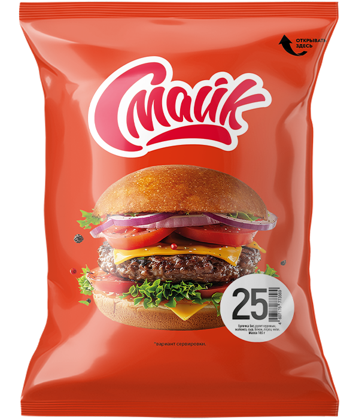

Бутерброд №25

Состав: булочка, рулет из мяса птицы, майонез, сыр, бекон, перец Чили.
Масса: 185 г.
Продукт охлажденный.
Пищевая и энергетическая ценность в 100 г продукта (средние значения):
Белки – 11 г.
Жиры – 20 г.
Углеводы – 29 г.
Калорийность – 350 ккал / 1440 кДж.